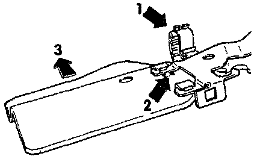

Removal
1. Remove the lower left trim panel, driver's side.2. Remove cover plate below pedal cluster. Foam rubber liner stays in the vehicle.
3. Unhook relay plate from bracket.
4. Remove protective plate between relay plate and pedal cluster as follows:
Guard Plate:

a. Unclip wiring harness from retainers (arrow 1).
b. Press clips (arrow 2) toward pedal cluster.
c. Press protective plate toward the instrument panel (arrow 3) until plate can be removed from its mounting.
d. Remove protective plate in downward direction.
CAUTION: DO NOT damage wiring harness
5. Guide screwdriver between steering column and clutch pedal and place it against the over-center spring.
Clutch Pedal:

6. Depress the clutch pedal and pry the return spring off the pedal in direction indicated by the arrow.